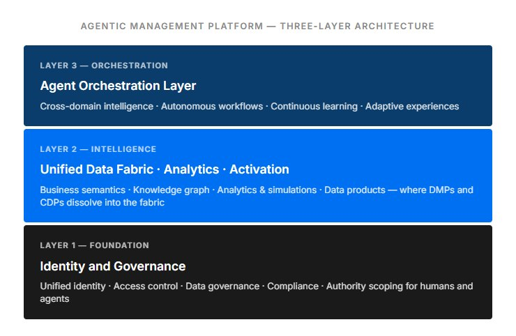

Abstract
The Agentic Management Platform (AMP) framework, first proposed in early 2026, predicted that enterprise technology architecture would consolidate around three distinct layers: Identity & Governance, Intelligence, and Agent Orchestration. This paper examines emerging market evidence—from analyst research, vendor convergence patterns, and enterprise deployment data—that validates the framework's core thesis: that sustainable competitive advantage in the agentic era resides in the Intelligence Layer (Layer 2), not the Orchestration Layer (Layer 3) where most vendor attention and marketing investment is currently concentrated.
1. Introduction: The Commoditization Signal
Something shifted in the first half of 2026 that deserves examination. The agentic AI market went from experimental to operational—and in the process, revealed a structural problem that most vendor pitches are designed to obscure.
Ninety percent of marketing organizations now use AI agents somewhere in their stack, according to Scott Brinker's Martech for 2026 research. Salesforce, Adobe, HubSpot, and a wave of AI-native challengers have all converged on the same pitch: describe your campaign in plain language, watch the system build it, launch in minutes instead of days. Gartner predicted 40% of enterprise applications would integrate task-specific agents by end of 2026, up from under 5% in 2025. That prediction now looks conservative.
But here's the problem: most of these platforms are running on the same underlying models. OpenAI or Anthropic underneath, different logo on top. The interfaces vary. The workflow branding varies. The reasoning engine is frequently identical to what the competitor down the street is renting from the same provider.
When speed becomes table stakes and the intelligence is commoditized, what's left to compete on?
That question—and the emerging answer to it—is what the AMP framework predicted. The market evidence now suggests the prediction was correct.
2. The AMP Framework: A Brief Synopsis
The Agentic Management Platform framework proposes that enterprise architecture in the agent era consolidates around three distinct layers:

Layer 1: Identity & Governance. The foundation. Unified identity, access control, data governance, and authority scoping—for humans and their agents. This layer answers the question: "What can this agent do on behalf of which user?"
Layer 2: Intelligence. The knowledge layer. Unified data fabric, business semantics, knowledge graphs, and the memory of what actually worked. This is where DMPs and CDPs get absorbed into something larger—not disappearing, but becoming components of a richer semantic infrastructure that spans the enterprise.
Layer 3: Agent Orchestration. The action layer. Cross-domain intelligence, autonomous workflows, the agents themselves. This is where the demos happen, where "minutes not days" gets performed.
The framework's central claim: sustainable competitive advantage resides in Layer 2, not Layer 3. Orchestration commoditizes. Intelligence differentiates. The enterprises building proprietary context—first-party data, decision logic, institutional memory—create durable advantage. The ones wrapping commodity AI in branded interfaces do not.
That was the prediction. Here's what the market now shows.
3. The Market Evidence
2.1 Adoption Velocity
The raw adoption numbers are staggering. According to Scott Brinker's Martech for 2026 research, 90% of marketing organizations now use AI agents somewhere in their stack—not experimenting, but actively deployed. Gartner's August 2025 prediction that 40% of enterprise applications would integrate task-specific AI agents by end of 2026 (up from under 5% in 2025) now appears conservative.
Gartner's 2026 Hype Cycle for Agentic AI notes that while only 17% of organizations have deployed AI agents to date, more than 60% expect to do so within two years—"the most aggressive adoption curve among all emerging technologies."
2.2 The Convergence Problem
Here's where the evidence gets interesting for the AMP thesis.
DMNews published an analysis in July 2026 that crystallized what enterprise buyers like my CMO contact are experiencing:
"Whoever owns the proprietary context—the data, the decision logic, the memory of what actually worked—owns the value. The software wrapper around it is becoming a commodity."
The piece documents how most agentic platforms "rely on the same OpenAI or Anthropic models, making their agentic offerings 'almost indistinguishable' from one another at the model layer." The interface differs. The workflow branding differs. The reasoning engine underneath is frequently identical.
This is precisely what the AMP framework predicted: Layer 3 (Orchestration) converges while Layer 2 (Intelligence) diverges.
2.3 The CDP Dissolution
Further evidence comes from the customer data platform market—a space I know well, having written the first major book on CDPs in 2020.
Brinker's chiefmartec research shows CDPs "shrinking as the center of the stack, dropping from 26.9% to 17.4% of B2C martech architecture." The capability isn't disappearing—it's migrating either to cloud data warehouses or directly into engagement platforms.
The March 2026 Gartner Magic Quadrant for CDPs explicitly praised platforms positioning themselves as "intelligent data fabrics with warehouse-native architecture." This is Layer 2 language—unified semantic models, knowledge graphs, cross-domain data products—not the point-solution CDP language of 2020.
What we're seeing is the CDP dissolving into the Intelligence Layer, exactly as the AMP framework describes: "The DMP's audience segments become a data product in the intelligence layer. The CDP's golden record becomes a node in the knowledge graph. They didn't disappear. They became components of a richer semantic infrastructure."
2.4 The Analyst Alignment
Perhaps most striking is how independently developed analyst frameworks are converging on similar architectural conclusions:
- Brinker's Martech Canvas (chiefmartec, March 2026): A composable architecture where "data, semantics, context, decisioning, apps, and agents are composed together more dynamically than the old layer-cake model."
- Forrester's Agentic AI Report (June 2026): Documents a "chase-catch gap" where three-quarters of enterprises are adopting agentic AI but few have scaled it—precisely because orchestration without intelligence infrastructure doesn't compound.
- Gartner's five-stage evolution model: From embedded assistants through task-specific agents (2026) to collaborative agent ecosystems (2028-2029)—a progression that implicitly requires unified intelligence infrastructure.
None of these analysts were working from the AMP framework. They arrived at structurally similar conclusions through independent market observation.
4. The SAP Validation
There's a reason I'm watching this space carefully: I'm building a training program at SAP—the Future of PMM Academy—that's preparing product marketers for exactly this architectural shift.
What we're seeing inside SAP's enterprise customers validates the three-layer model:
Layer 1 (Identity & Governance) is consolidating around unified authority scoping—not just for humans, but for agents acting on their behalf. The question "what can this agent do on behalf of which user?" is becoming a platform-level service.
Layer 2 (Intelligence) is where the hard work is happening. First-party data unification. Business semantics that span functions. Knowledge graphs that capture institutional memory. This is the layer that can't be rented from a foundation model provider—it has to be built.
Layer 3 (Orchestration) is where the demos happen, but increasingly it's where the commodity action happens. Same models, same speeds, different logos.
The enterprises investing in Layer 2 are winning agent evaluations. The ones investing only in Layer 3 are discovering what my CMO contact discovered: speed without context doesn't differentiate.
5. The Buyer-Side Disruption
One dimension the vendor-side analysis misses: buyer agents are simultaneously restructuring how brands get evaluated.
McKinsey estimates 20-50% of traffic from traditional search channels is at risk from AI-native discovery (ChatGPT, Perplexity, Claude, Gemini). Brinker's research indicates 63% of B2B marketing leaders recognize this shift, but only 14% have adapted their strategies.
This isn't a Layer 3 problem. A brand can compress its insight-to-launch cycle to nine minutes and still be invisible to the buyer's agent if the intelligence infrastructure—the structured knowledge, the trust signals, the semantic clarity—isn't there.
The buyers' agents don't evaluate your campaign. They evaluate your data.
6. Implications for Agent Driven
When I pitched the upcoming Agent Driven to Wiley, the recurring question was timing: Is this architecture theoretical, or is it playing out in the market?
Six months later, the evidence is clear:
- Gartner: 40% agent integration by end of 2026
- Forrester: Three-quarters of enterprises chasing agentic AI, few catching it
- DMNews: Orchestration commoditizing, intelligence diverging
- Brinker: CDP dissolving into intelligence fabric
- SAP internal data: Layer 2 investment correlating with agent deployment success
The frameworks in Agent Driven—the AMP architecture, the TIE Fighter evolution, the Three Horizons investment model—aren't predictions. They're descriptions of what's happening now, written in a language that makes the patterns visible before they become obvious.
The intelligence layer wars are accelerating. The enterprises that recognize this are building durable advantage. The ones that don't are optimizing the wrong layer of the stack.
References
- Brinker, S. (2026). "Martech for 2026." chiefmartec.com.
- Brinker, S. (2026). "Stacks on a Plane: Reshaping martech on a universal data layer." chiefmartec.com, March 19.
- DMNews. (2026). "Marketing automation platforms spent the first half of 2026 compressing the time from insight to campaign launch." July.
- Forrester. (2026). "The State of Agentic AI in 2026: Companies Are Chasing, Few Are Catching." June 9.
- Gartner. (2025). "Gartner Predicts 40% of Enterprise Apps Will Feature Task-Specific AI Agents by 2026." Press release, August 26.
- Gartner. (2026). "2026 Hype Cycle for Agentic AI." April 30.
- Gartner. (2026). "Gartner Predicts 60% of Brands Will Use Agentic AI by 2028." Press release, January 15.
- Gartner. (2026). "Magic Quadrant for Customer Data Platforms." March.
- McKinsey. (2026). "New Front Door to the Internet: Winning in the Age of AI Search."
- O'Hara, C. (2020). Customer Data Platforms. Wiley.
- O'Hara, C. (2026). "Introducing the AMP: The Agentic Management Platform." The Full Stack, March.